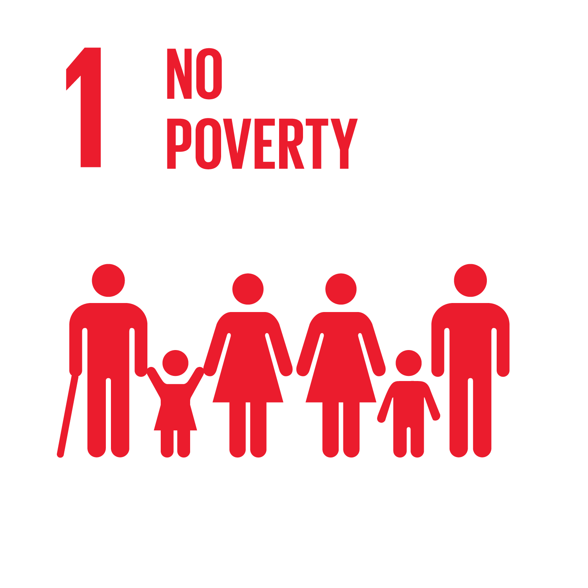

Sustainable Goals
The Sustainable Development Goals (SDGs), officially known as Transforming Our World: the 2030 Agenda for Sustainable Development, are a set of 17 global goals established by the United Nations in September 2015. These goals are designed to address a wide range of global challenges and promote sustainable development across economic, social, and environmental dimensions. The overarching aim is to improve the well-being of people and the planet by the year 2030.
No Poverty
End poverty in all its forms everywhere.
Zero Hunger

End hunger, achieve food security and improved nutrition, and promote sustainable agriculture.
Good Health and Well-Being

Ensure healthy lives and promote well-being for all at all ages
Quality Education

Ensure inclusive and equitable quality education and promote lifelong learning opportunities for all.
Gender Equality

Achieve gender equality and empower all women and girls.
Clean Water And Sanitation

Ensure availability and sustainable management of water and sanitation for all.
Affordable And Clean Energy

Ensure access to affordable, reliable, sustainable, and modern energy for all.
Decent Work And Economic Growth

Promote sustained, inclusive, and sustainable economic growth, full and productive employment, and decent work for all.
Industry Innovation And Infrastructure

Build resilient infrastructure, promote inclusive and sustainable industrialization, and foster innovation.
Reduced Inequalities

Reduce inequality within and among countries.
Sustainable Cities And Communities

Make cities and human settlements inclusive, safe, resilient, and sustainable.
Responsible Consumption And Production

Ensure sustainable consumption and production patterns.
Climate Action

Take urgent action to combat climate change and its impacts.
Life Below Watern

Conserve and sustainably use the oceans, seas, and marine resources for sustainable development.
Life On Land

Protect, restore, and promote sustainable use of terrestrial ecosystems, sustainably manage forests, combat desertification, and halt and reverse land degradation and halt biodiversity loss.
Peace,justice And Strong Institutions

Promote peaceful and inclusive societies for sustainable development, provide access to justice for all, and build effective, accountable, and inclusive institutions at all levels.
Partnerships For the Goals

Strengthen the means of implementation and revitalize the Global Partnership for Sustainable Development